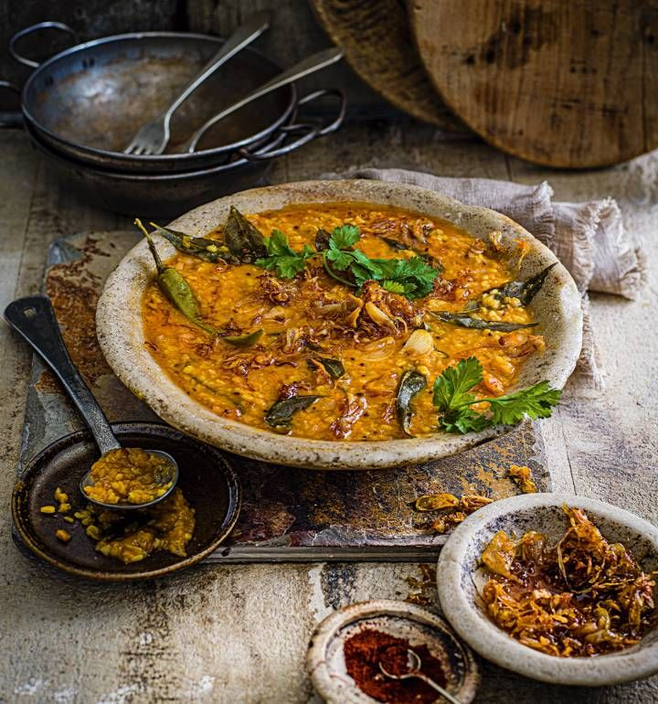

Tarka Dal

Description
Traditional Indian dish with many different variations. In all variations the dal is cooked first, and the tarka (the spice mix) is added afterwards.
The recipe below is a basic guide to a 'base', and can be modified according to taste.
Ingredients (4 portions)
For the dal
- 250g of rinsed split yellow dal, or red lentils
- 2 to 4 bay leaves
- 2 whole cloves
- A pinch of salt
- 2 heaped tsp of turmeric powder
For the Tarka
- 1 large onion - halved and finely sliced
- 1 thumb size piece of ginger - finely sliced
- 3 cloves of garlic - finely sliced
- 1 tsp mustard seed
- 1 tsp hot chilli powder
- 1 tsp corriander seed
- 3 tbsp ghee (or oil)
Steps
- If you have time, soak the dal in cold water for at least 1 hour, or up to 4 hours. This is not necessary, but will help soften it in the cooking, for a smoother finish.
- Add all 'dal' ingredients into a heavy based pot and cover generously with cold water.
- Bring dal to the boil, skim off any 'scum' and reduce heat to a simmer.
- Simmer for at least 45 minutes, or until the dal starts to break up - stir occasionally so it does not stick. If dry, add more boiling water.
- Once the dal starts to break, gently heat 1 tbsp of the ghee or oil and prepare the tarka ingredients.
- As the ghee or oil starts to smoke, add the ginger, garlic, and onion and instantly turn up the heat to 'burn' the slices.
- Stir vigorously, and throw in mustard and corriander seeds after 1 minute.
- Once the seeds start to 'pop', add 1 more tbsp of ghee or oil, the chilli powder and continue to stir vigorously for 30 seconds.
- Once the chilli powder is burning, add the final tbsp of ghee or oil, stir and take off the heat.
- Whisk the dal to break up the pulses more and take off the heat also.
- For the final step, add 2/3 of the tarka into the dal and mix well.
- Serve as intended, with the final 1/3 of the tarka drizzled on top to add more colour and flavour.